AI-Powered
Training
Replacing static, one-size-fits-all workout plans with a fully personalized, AI-driven experience — Jefit’s highest-impact feature to date.
Project at a Glance
It started with a pattern I couldn’t ignore — paid new users dropping off before they saw real value. I brought it to a growth meeting, made the case with app store reviews, competitor analysis, and user research, and got the green light to build from scratch. What launched as the Load Progression feature eventually grew into Jefit’s AI Adaptive Training Plan — now the top paid feature to date, and still iterating.
Who’s Jefit
Jefit is a strength training app built around one of the largest exercise databases in the world, with a global community of lifters at its core. When I joined the team, I began my own strength training journey — wanting both a healthier lifestyle and a firsthand understanding of the people I was designing for.
Too Generic to Keep Anyone
The drop-off pattern was hard to miss.
Paid users were handed a static 28-day plan — same exercises every week, no matter their goals or progress. What they paid for wasn’t growing with them.
The drop-off happened in two waves. Most never made it through activation. Those who did soon realized the plan couldn’t keep up — too generic to feel personal, too static to reflect their progress. Either way, walking away was the easier choice.
What we’d already tried
Tooltips, walkthroughs, video demos, even a UI refresh — four onboarding investments shipped. Metrics barely moved, and the reviews kept naming the same culprit.
The fix wasn’t the introduction. It was the plan itself.
Understanding
the Real User
I had two halves of the picture — when users left, and what they said. The missing piece was why.
So I spent three weeks listening at scale. First, the quantitative: Amplitude mapped drop-off by cohort and day. Those patterns — read through my lens as both designer and user of the app — became the hypotheses to test. Then the qualitative: with 13M users, the surface was too wide to read manually, so AI clustered themes across NPS, reviews, community, beta feedback, and Zendesk. 10 in-depth interviews validated and expanded them. The funnel told me where users dropped; the voices told me why.
This pattern holds across every other pre-built plan we benchmarked — activation remains the universal bottleneck.
Retention curves flatten sharply after week 1. Users who clear the early hurdle compound — so the work was clear: get them past it.
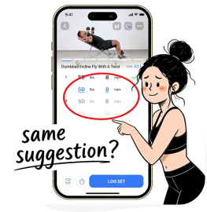
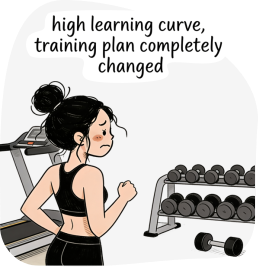
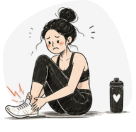
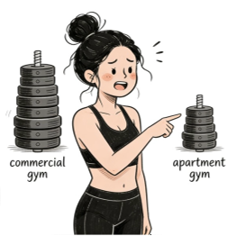
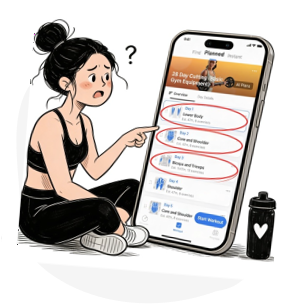
How might we create an adaptive plan that feels personal & trustworthy — without overwhelming the user?
From a 28-day fixed plan to a living system.
Most features trace back to a research pain point — two in monetization and adoption, six in the core product. Ordered the way users meet them.
GTM launch popups — the first introduction.
A full-screen popup at app launch — the one surface every existing user reliably hits — introduces Adaptive Plan and prompts the first try. It turns a silent release into an active opt-in, instead of a new feature buried in the plan tab.
Nudges.
Two jobs: maximize visibility for users actively looking for a better program by placing Adaptive Plan at multiple entry points, and build confidence each time it appears. To avoid stacking prompts in one session, nudges hold back until the second app launch — the GTM popup gets its own moment first.
Training preference.
Before, training preferences locked at onboarding — users were stuck on day-one settings. Now every preference stays editable, and new inputs — injury, variety, exercise suggestions — let the plan keep shaping around their routine instead of overriding it.
Equipment management.
Before, the plan applied static weight increments. But every free weight and weight machine — dumbbell racks, plate sets, Smith machines, cable stations — varies brand to brand. Different jumps, different ceilings. Users now enter their own weights, set per-equipment increment ranges, and pin min/max bounds, so every prescribed load is one they can actually load on the bar.
Mesocycle plan that adapts each week.
The plan rebalances volume, intensity, recovery, and exercise selection week over week — based on what users actually did, not what was prescribed on day one. New movements ramp in gradually so the plan keeps evolving without going stale, and a weekly preview popup opens each cycle as a coach’s update, not a silent shuffle.
Load progression.
Weight, reps, and sets scale automatically from feedback and historical performance. Progression stays visible, and a “Revert” option puts users in control when they’re not ready for a heavier session — falling back to the previous training log while the system recalibrates.
Feedback module.
After each session with incomplete exercises, users can provide input — and those signals feed back into the engine to recalibrate intensity and recovery for the next session.
Injury management.
Log an injury or area of pain — affected exercises swap to safe substitutes. A check-in every 14 days updates recovery progress, guiding the user back to full training.
How It Came
Together
The shipped experience hides a long tail of decisions — flows that were thrown out, an IA that was redrawn twice, business and engineering constraints that reshaped the brief. Open any chapter below to see the work underneath.
01 Strategy alignment
With the direction set — build a plan that adapts, not another onboarding — I aligned PM (positioning), growth (lifecycle timing), and engineering (feasibility) around one thesis: users have to feel the plan adapting to them — that moment is what makes activation stick, retention compound, and the paywall convert. The cards below are the moves we made to get there.
02 User Flow
Three flows carried the experience: onboarding without form-fatigue, weekly adaptation with a clear rationale, and a manual override when the AI’s suggestion didn’t fit. The hardest call was the override path — giving users escape hatches without undermining trust in the engine.
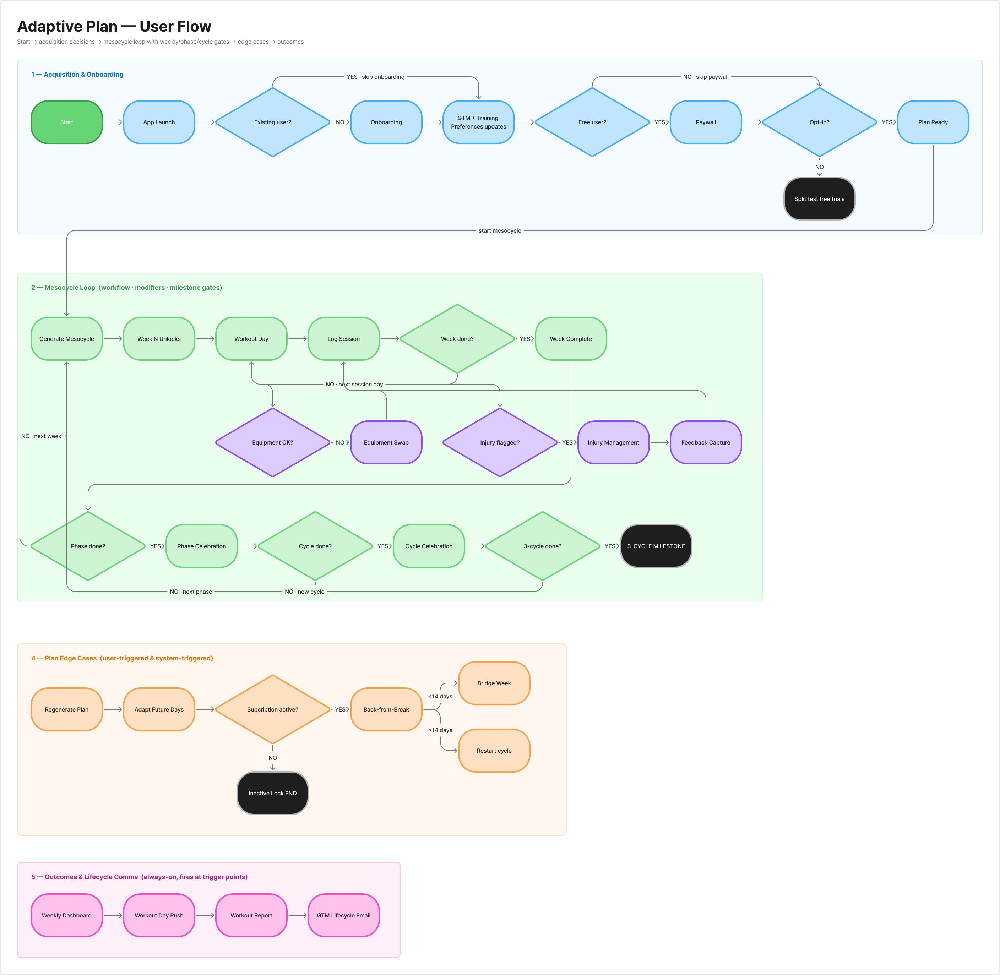
User flow diagram03 Iterations
The Adaptive Plan ecosystem spans a dozen surfaces, and several went through many rounds before landing. The three highlights below show v1 → shipped — many smaller UI tweaks lived between. Early on, I used AI to brainstorm design directions and widen the option space before narrowing.
Started with a short-term vs. long-term injury split. Iterated to a severity framework: mild injuries (muscle or joint) swap affected exercises for lower-intensity alternatives instead of excluding them; severe injuries remove all exercises in the affected area. Users keep training where they safely can, instead of pausing the whole plan.
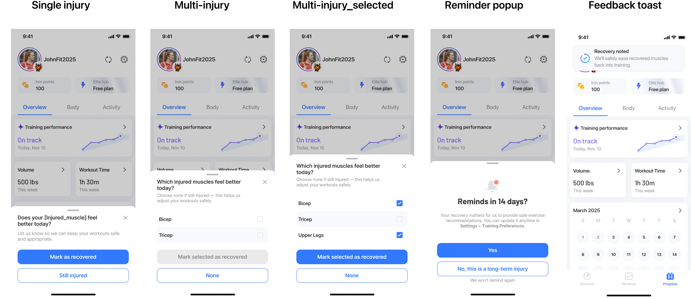
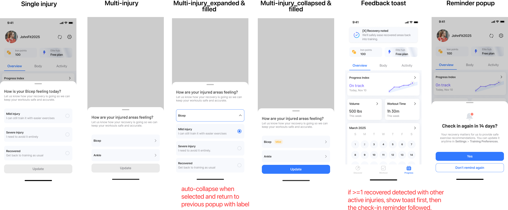
Started with one weight range applied to every user — same min, max, and steps regardless of the machine they actually had. Iterated to per-machine ranges scoped to each user’s hardware: every free weight and weight machine carries its own min, max, and step. Users log only the weights their gym can actually load.
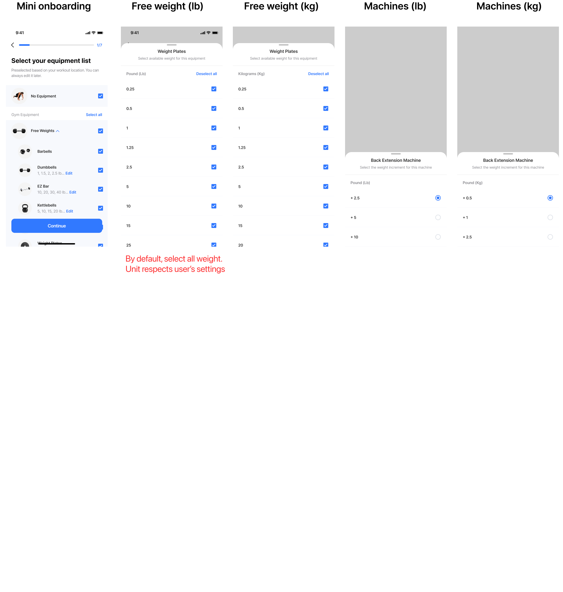
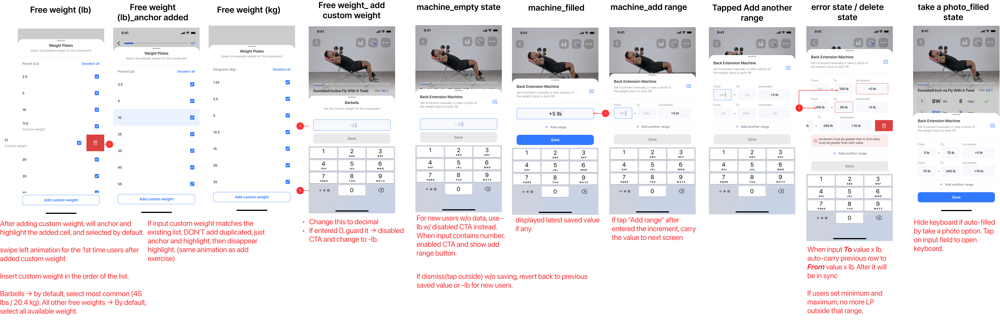
Started with a static announcement shipped to every user whose plan progressed — same message regardless of context, hiding the robust engine underneath. Iterated to a personalized popup that surfaces each user’s own past logs as evidence behind the recommendation, layers in educational context for the rules driving the push, and offers a revisit entry point users can come back to anytime. Users see the why behind the new numbers, not just the prompt to lift more.
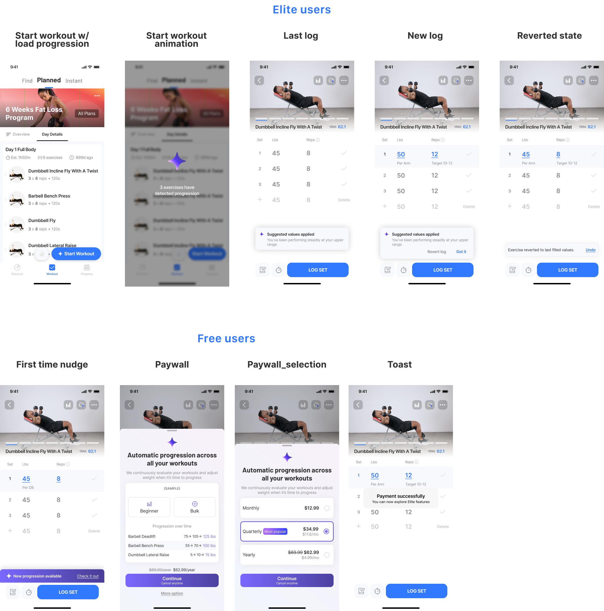
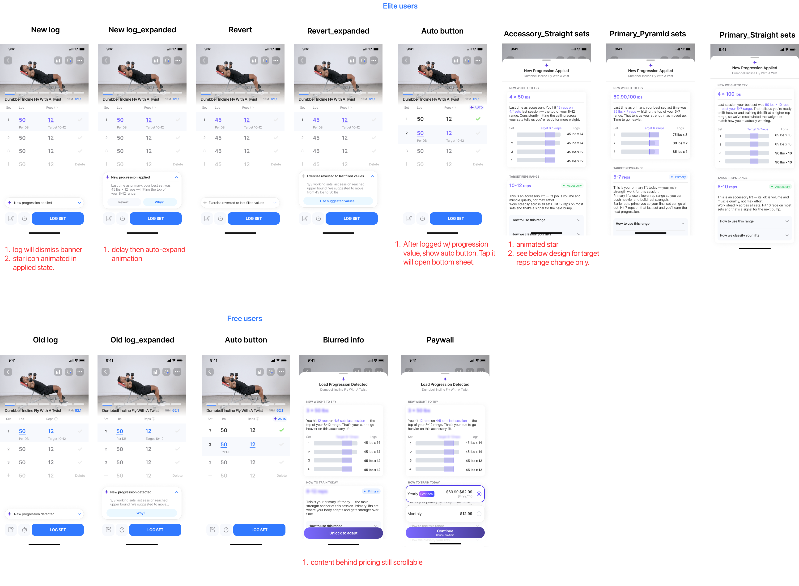
Impact at Scale
Launched company-wide to all 13M+ Jefit users in Q1 2026. The static plan it replaced lost 78.8% of paid users by Day 30; after adoption, D30 retention climbed +28% — the lift four onboarding fixes never delivered. And it’s not a one-time release: the team still ships improvements across iOS, Android, and watchOS, week over week.
Highest-performing feature in Jefit’s history.
Topped every other premium release on adoption, retention, and revenue metrics combined.
#1 paywall in Jefit’s portfolio.
14% conversion vs. the 2% soft paywall industry average, and a +131% upgrade rate vs. baseline — the single most profitable premium feature in company history.
AI roadmap anchored.
Directly shaped Jefit’s pivot toward AI-powered personalization across the entire platform.
“I really like the Adaptive plan, and would love to be able to make a second Adaptive plan focused only on dynamic mobility…”
— jonny.akerberg“Easy to use. Great for planning and adapting your own routines. Definitely helps with progress knowing exactly what you trained and lifted on previous sessions.”
— brown dog“It shows you which exercise to do, shows the weight and number of reps from your last session (important for progressive overload)… It is a comprehensive yet user-friendly and genuinely useful app.”
— HonzaFreudl“I have started using the AI workouts and they are varied and help me to stay on track. I love the post-workout summary & analysis.”
— Matthew R.What I Learned
Alignment was the first design. Before any mockups, I ran ideation workshops with PM, growth, and engineering — every one of us a lifter ourselves, so “ideal plan” had to be a business case and a workout we’d actually run. The collisions surfaced constraints I would’ve missed solo, and the alignment held through every trade-off after.
Customization is calibration, not a checkbox. Give too much and the system loses coherence; give too little and users feel locked out. The hardest call was choosing which surfaces to expose — equipment, injury, schedule, exercise swaps — so users felt in control without breaking what the engine needed to work.
You can’t design the perfect plan — so I designed for being wrong. I went in chasing the right answer: the correct load, the ideal split, dialed in from day one. But there’s no perfect plan for any one person, and no first guess — mine or the engine’s — survives contact with a real body that changes week to week. Getting it right the first time was never on the table. So I stopped designing for correct and started designing for correctable: Revert, the feedback loop, the 14-day injury check-in, the “why” behind every number. The plan earns trust not by being right on day one, but by visibly getting better as it learns you.